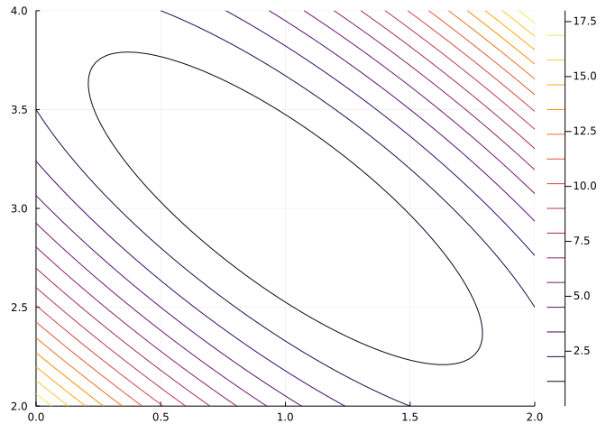

f(x, p) = x^5 - x - 1
prob = NonlinearProblem(f, 1.0)
solve(prob, NewtonRaphson())u: 1.1673039782614187The Julia ecosystem advances rapidly. For much of it, the driving force is the SciML organization (Scientific Machine Learning).
In this section we describe some packages provided by this organization that could be used as alternatives to the ones utilized in these notes. Members of this organization created many packages for solving different types of differential equations, and have branched out from there. Many newer efforts of this organization have been to write uniform interfaces to other packages in the ecosystem, some of which are discussed below. We don’t discuss this key promise of SciML: “Performance is considered a priority, and performance issues are considered bugs,” as we don’t pursue features like in-place modification, sparsity, etc. Interested readers should consult the relevant packages documentation.
The basic structure to use these packages is the “problem-algorithm-solve” interface described in The problem-algorithm-solve interface sectino. We also discussed this interface a bit in ODEs.
These packages are in a process of rapid development and change to them is expected.
Symbolics)The Symbolics, SymbolicUtils, and ModelingToolkit packages are provided by this organization. These can be viewed as an alternative to SymPy, which is used throughout this set of notes. See the section on Symbolics for some additional details, the package documentation, or the documentation for SymbolicsUtils.
Solving one or more equations (simultaneously) is different in the linear case (where solutions are readily found – though performance can distinguish approaches) and the nonlinear case – where for most situations, numeric approaches are required.
LinearSolveThe LinearSolve package aims to generalize the solving of linear equations. For many cases these are simply represented as matrix equations of the form Ax=b, from which Julia (borrowing from MATLAB) offers the interface A \ b to yield x. There are scenarios that don’t naturally fit this structure and perhaps problems where different tolerances need to be specified, and the LinearSolve package aims to provide a common interface to handle these scenarios. As this set of notes doesn’t bump into such, this package is not described here. In the symbolic case, the Symbolics.solve_for function was described in Symbolics.
NonlinearSolveThe NonlinearSolve package can be seen as an alternative to the use of the Roots package in this set of notes. The package presents itself as “Fast implementations of root finding algorithms in Julia that satisfy the SciML common interface.”
The package is loaded through the following command:
Unlike Roots, the package handles problems beyond the univariate case, as such, the simplest problems have a little extra setup required.
For example, suppose we want to use this package to solve for zeros of \(f(x) = x^5 - x - 1\). We could do so a few different ways.
An approach that most closely mirrors that of Roots would be:
u: 1.1673039782614187The NewtonRaphson method uses a derivative of f, which NonlinearSolve computes using automatic differentiation.
However, it is more performant and not much more work to allow for a vector of starting values. For this, f can be defined as:
The function definition expects a container for the “x” variables and allows the passing of a container to hold parameters. We could have used the dotted operations for the power and each subtraction to allow vectorization of these basic math operations, as u is a container of values. The @. macro makes adding the “dots” quite easy, as illustrated above. It converts “every function call or operator in expr into a dot call.”
A problem is set up with this function and an initial guess. The @SVector specification for the guess is for performance purposes and is provided by the StaticArrays package.
NonlinearProblem with uType SVector{1, Float64}. In-place: false u0: 1-element SVector{1, Float64} with indices SOneTo(1): 1.0
The problem is solved by calling solve with an appropriate method specified. Here we use Newton’s method.
u: 1-element SVector{1, Float64} with indices SOneTo(1):
1.1673039782614187Again, the derivative of f is computed automatically.
The basic interface for retrieving the numeric solution from the solution object is to use indexing:
This interface is more performant than Roots, though it isn’t an apples to oranges comparison, as different stopping criteria are used by the two. In order to compare, we help out the call to NonlinearProblem to indicate the problem is non-mutating by adding a “false”, as follows:
365.044 ns (0 allocations: 0 bytes)u: 1-element SVector{1, Float64} with indices SOneTo(1):
1.1673039782614187As compared to:
This problem can also be solved using a bracketing method. The package has both Bisection and Falsi as possible methods. To use a bracketing method, the initial bracket must be specified.
NonlinearProblem with uType Tuple{Float64, Float64}. In-place: false u0: (1.0, 2.0)
And
Incorporating parameters is readily done. For example to solve \(f(x) = \cos(x) - x/p\) for different values of \(p\) we might have:
f(x, p) = @. cos(x) - x/p
u0 = (0, pi/2)
p = 2
prob = NonlinearProblem(f, u0, p)
solve(prob, Bisection())u: 1.0298665293222586The insignificant difference in stopping criteria used by NonlinearSolve and Roots is illustrated in this example, where the value returned by NonlinearSolve differs by one floating point value:
We can solve for several parameters at once, by using a matching number of initial positions as follows:
We solve now for a point on the surface of the following peaks function where the gradient is \(0\). (The gradient here will be a vector-valued function from \(R^2\) to \(R^2.\)) First we define the function:
function _peaks(x, y)
p = 3 * (1 - x)^2 * exp(-x^2 - (y + 1)^2)
p -= 10 * (x / 5 - x^3 - y^5) * exp(-x^2 - y^2)
p -= 1/3 * exp(-(x + 1)^2 - y^2)
p
end
peaks(u) = _peaks(u[1], u[2]) # pass container, take first two componentspeaks (generic function with 1 method)The gradient can be computed different ways within Julia, but here we use the fact that the ForwardDiff package is loaded by NonlinearSolve. Once the function is defined, the pattern is similar to above. We provide a starting point, create a problem, then solve:
∇peaks(x, p=nothing) = NonlinearSolve.ForwardDiff.gradient(peaks, x)
u0 = @SVector[1.0, 1.0]
prob = NonlinearProblem(∇peaks, u0)
u = solve(prob, NewtonRaphson())u: 2-element SVector{2, Float64} with indices SOneTo(2):
1.098272834335093
0.8544609795247524We can see that this identified value is a “zero” through:
ModelingToolkit to model a non-linear problemNonlinear problems can also be approached symbolically using the ModelingToolkit package. There is one additional step necessary.
As an example, we look to solve numerically for the zeros of \(x^5-x-\alpha\) for a parameter \(\alpha\). We can describe this equation as follows:
The extra step is to specify a “NonlinearSystem.” It is a system, as in practice one or more equations can be considered. The NonlinearSystemconstructor handles the details where the equation, the variable, and the parameter are specified. Below this is done using vectors with just one element:
Model ns with 1 equations States (1): x Parameters (1): α
The name argument is special. The name of the object (ns) is assigned through =, but the system must also know this same name. However, the name on the left is not known when the name on the right is needed, so it is up to the user to keep them synchronized. The @named macro handles this behind the scenes by simply rewriting the syntax of the assignment:
Model ns with 1 equations States (1): x Parameters (1): α
With the system defined, we can pass this to NonlinearProblem, as was done with a function. The parameter is specified here, and in this case is α => 1.0. The initial guess is [1.0]:
NonlinearProblem with uType Vector{Float64}. In-place: true u0: 1-element Vector{Float64}: 1.0
The problem is solved as before:
┌ Warning: `vendor()` is deprecated, use `BLAS.get_config()` and inspect the output instead
│ caller = (::NonlinearSolve.DefaultLinSolve)(x::Vector{Float64}, A::Matrix{Float64}, b::Vector{Float64}, update_matrix::Bool; tol::Nothing, kwargs::Base.Pairs{Symbol, Union{}, Tuple{}, NamedTuple{(), Tuple{}}}) at utils.jl:124
└ @ NonlinearSolve /Users/verzani/.julia/packages/NonlinearSolve/hDIt1/src/utils.jl:124u: 1-element Vector{Float64}:
1.1673040828230086Optimization.jl)We describe briefly the Optimization package which provides a common interface to numerous optimization packages in the Julia ecosystem. We discuss only the interface for Optim.jl defined in OptimizationOptimJL.
We begin with a standard example from first semester calculus:
Among all rectangles of fixed perimeter, find the one with the maximum area.
If the perimeter is taken to be \(25\), the mathematical setup has a constraint (\(P=25=2x+2y\)) and an objective (\(A=xy\)) to maximize. In this case, the function to maximize is \(A(x) = x \cdot (25-2x)/2\). This is easily done different ways, such as finding the one critical point and identifying this as the point of maximum.
To do this last step using the Optimization package, we must first load the package and the underlying backend glue code we intend to use:
Our objective function is defined using an intermediate function derived from the constraint:
A (generic function with 2 methods)The minus sign is needed here as optimization routines find minimums, not maximums.
Next, we define an optimization function with information on how its derivatives will be taken. The following uses ForwardDiff, which is a good choice in the typical calculus setting, where there are a small number of inputs (just \(1\) here.)
F = OptimizationFunction(A, Optimization.AutoForwardDiff())
x0 = [4.0]
prob = OptimizationProblem(F, x0)OptimizationProblem. In-place: true u0: 1-element Vector{Float64}: 4.0
The problem is solved through the common interface with a specified method, in this case Newton:
We use the method Newton and not NewtonRaphson, as above. Both methods are similar, but they come from different packages – the latter for solving non-linear equation(s), the former for solving optimization problems.
The solution is an object containing the identified answer and more. To get the value, use index notation:
The corresponding \(y\) value and area are found by:
The minimum property also holds the identified minimum:
The package is a wrapper around other packages. The output of the underlying package is presented in the original property:
* Status: success
* Candidate solution
Final objective value: -3.906250e+01
* Found with
Algorithm: Newton's Method
* Convergence measures
|x - x'| = 2.25e+00 ≰ 0.0e+00
|x - x'|/|x'| = 3.60e-01 ≰ 0.0e+00
|f(x) - f(x')| = 5.06e+00 ≰ 0.0e+00
|f(x) - f(x')|/|f(x')| = 1.30e-01 ≰ 0.0e+00
|g(x)| = 0.00e+00 ≤ 1.0e-08
* Work counters
Seconds run: 1 (vs limit Inf)
Iterations: 1
f(x) calls: 2
∇f(x) calls: 2
∇²f(x) calls: 1This problem can also be approached symbolically, using ModelingToolkit.
For example, we set up the problem with:
The above should be self explanatory. To put into a form to pass to solve we define a “system” by specifying our objective function, the variables, and the parameters.
(This step is different, as before an OptimizationFunction was defined; we use @named, as above, to ensure the system has the same name as the identifier, sys.)
This system is passed to OptimizationProblem along with a specification of the initial condition (\(x=4\)) and the perimeter (\(P=25\)). A vector of pairs is used below:
OptimizationProblem. In-place: true u0: 1-element Vector{Float64}: 4.0
The keywords grad=true and hess=true instruct for automatic derivatives to be taken as needed. These are needed in the choice of method, Newton, below.
Solving this problem then follows the same pattern as before, again with Newton we have:
(A derivative-free method like NelderMead() could be used and then the grad and hess keywords above would be unnecessary, though not harmful.)
The related calculus problem:
Among all rectangles with a fixed area, find the one with minimum perimeter
could be similarly approached:
@parameters Area
@variables x
y = Area/x # from A = xy
P = 2x + 2y
@named sys = OptimizationSystem(P, [x], [Area])
u0 = [x => 4.0]
p = [Area => 25.0]
prob = OptimizationProblem(sys, u0, p; grad=true, hess=true)
soln = solve(prob, LBFGS())u: 1-element Vector{Float64}:
5.000000000274741We used an initial guess of \(x=4\) above. The LBFGS method is a computationally efficient modification of the Broyden-Fletcher-Goldfarb-Shanno algorithm … It is a quasi-Newton method that updates an approximation to the Hessian using past approximations as well as the gradient.” On this problem it performs similarly to Newton, though in general may be preferable for higher-dimensional problems.
Scalar functions of two input variables can have their minimum value identified in the same manner using Optimization.jl.
For example, consider the function
\[ f(x,y) = (x + 2y - 7)^2 + (2x + y - 5)^2 \]
We wish to minimize this function.
We begin by defining a function in Julia:
We turn this into an optimization function by specifying how derivatives will be taken, as we will the LBFGS algorithm below:
(::OptimizationFunction{true, Optimization.AutoForwardDiff{nothing}, typeof(f), Nothing, Nothing, Nothing, Nothing, Nothing, Nothing, Nothing, Nothing, Nothing, Nothing, Nothing, Nothing, Nothing, Nothing, Nothing}) (generic function with 1 method)We will begin our search at the origin. We have to be mindful to use floating point numbers here:
OptimizationProblem. In-place: true u0: 2-element Vector{Float64}: 0.0 0.0
Finally, we solve the values:
The value of \((1, 3)\) agrees with the contour graph, as it is a point in the interior of the contour for the smallest values displayed.
using Plots
xs = range(0, 2, length=100)
ys = range(2, 4, length=100)
contour(xs, ys, (x,y) -> f((x,y), nothing))
We could also use a derivative-free method, and skip a step:
Integrals.jl)The Integrals package provides a common interface to different numeric integration packages in the Julia ecosystem. For example, QuadGK and HCubature. The value of this interface, over those two packages, is its non-differentiated access to other packages, which for some uses may be more performant.
The package follows the same problem-algorithm-solve interface, as already seen.
The interface is designed for \(1\)-and-higher dimensional integrals.
The package is loaded with
For a simple definite integral, such as \(\int_0^\pi \sin(x)dx\), we have:
To get access to the answer, we can use indexing notation:
Comparing to just using QuadGK, the same definite integral would be estimated with:
The estimated upper bound on the error from QuadGK, is available through the resid property on the Integrals output:
The Integrals solution is a bit more verbose, but it is more flexible. For example, the HCubature package provides a similar means to compute \(n\)- dimensional integrals. For this problem, the modifications would be:
u: 1-element SVector{1, Float64} with indices SOneTo(1):
2.0000000000000004The estimated maximum error is also given by resid:
As well, suppose we wanted to parameterize our function and then differentiate.
Consider \(d/dp \int_0^\pi \sin(px) dx\). We can do this integral directly to get
\[ \begin{align*} \frac{d}{dp} \int_0^\pi \sin(px)dx &= \frac{d}{dp}\left( \frac{-1}{p} \cos(px)\Big\rvert_0^\pi\right)\\ &= \frac{d}{dp}\left( -\frac{\cos(p\cdot\pi)-1}{p}\right)\\ &= \frac{\cos(p\cdot \pi) - 1)}{p^2} + \frac{\pi\cdot\sin(p\cdot\pi)}{p} \end{align*} \]
Using Integrals with QuadGK we have:
f(x, p) = sin(p*x)
function ∫sinpx(p)
prob = IntegralProblem(f, 0.0, pi, p)
solve(prob, QuadGKJL())
end∫sinpx (generic function with 1 method)We can compute values at both \(p=1\) and \(p=2\):
To find the derivative in \(p\) , we have:
(fill(-1.9999999999999993), fill(-6.975736996017264e-16))(In QuadGK, the following can be differentiated ∫sinpx(p) = quadgk(x -> sin(p*x), 0, pi)[1] as well. Integrals gives a consistent interface.
The power of a common interface is the ability to swap backends and the uniformity for different dimensions. Here we discuss integrals of scalar-valued and vector-valued functions.
The area under a surface generated by \(z=f(x,y)\) over a rectangular region \([a,b]\times[c,d]\) can be readily computed. The two coding implementations require \(f\) to be expressed as a function of a vector–and a parameter–and the interval to be expressed using two vectors, one for the left endpoints ([a,c]) and on for the right endpoints ([b,d]).
For example, the area under the function \(f(x,y) = 1 + x^2 + 2y^2\) over \([-1/2, 1/2] \times [-1,1]\) is computed by:
f(x, y) = 1 + x^2 + 2y^2 # match math
fxp(x, p) = f(x[1], x[2]) # prepare for IntegralProblem
ls = [-1/2, -1] # left endpoints
rs = [1/2, 1] # right endpoints
prob = IntegralProblem(fxp, ls, rs)
soln = solve(prob, HCubatureJL())u: 3.5Of course, we could have directly defined the function (fxp) using indexing of the x variable.
For non-rectangular domains a change of variable is required.
For example, an integral to assist in finding the volume of a sphere might be
\[ V = 2 \iint_R \sqrt{\rho^2 - x^2 - y^2} dx dy \]
where \(R\) is the disc of radius \(\rho\) in the \(x-y\) plane.
The usual approach is to change to polar-coordinates and write this integral as
\[ V = \int_0^{2\pi}\int_0^\rho \sqrt{\rho^2 - r^2} r dr d\theta \]
the latter being an integral over a rectangular domain.
To compute this transformed integral, we might have:
function vol_sphere(ρ)
f(rθ, p) = sqrt(ρ^2 - rθ[1]^2) * rθ[1]
ls = [0,0]
rs = [ρ, 2pi]
prob = IntegralProblem(f, ls, rs)
solve(prob, HCubatureJL())
end
vol_sphere(2)u: 16.75516082024234If it is possible to express the region to integrate as \(G(R)\) where \(R\) is a rectangular region, then the change of variables formula,
\[ \iint_{G(R)} f(x) dA = \iint_R (f\circ G)(u) |det(J_G(u)| dU \]
turns the integral into the non-rectangular domain \(G(R)\) into one over the rectangular domain \(R\). The key is to identify \(G\) and to compute the Jacobian. The latter is simply accomplished with ForwardDiff.jacobian.
For an example, we find the moment of inertia about the axis of the unit square tilted counter-clockwise an angle \(0 \leq \alpha \leq \pi/2\).
The counter clockwise rotation of a unit square by angle \(\alpha\) is described by
\[ G(u, v) = \langle \cos(\alpha)\cdot u - \sin(\alpha)\cdot v, \sin(\alpha)\cdot u, +\cos(\alpha)\cdot v \rangle \]
So we have \(\iint_{G(R)} x^2 dA\) is computed by the following with \(\alpha=\pi/4\):
The Integrals package provides an interface for vector-valued functions. By default, the number of dimensions in the output is assumed to be \(1\), but the nout argument can adjust that.
Let \(f\) be vector valued with components \(f_1, f_2, \dots, f_m\), then the output below is the vector with components \(\iint_R f_1 dV, \iint_R f_2 dV, \dots, \iint_R f_m dV\).
For a trivial example, we have: